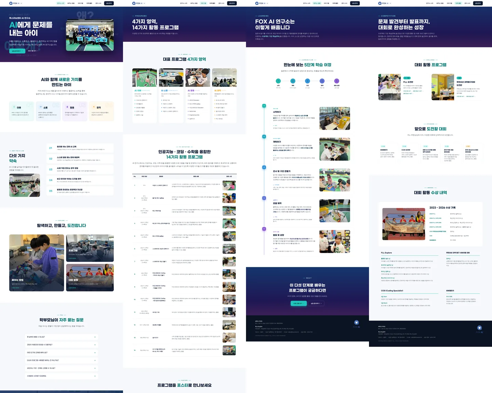

게임 서버를 고치다가 개발을 시작했습니다.
2018년부터 2년 가까이 동시 접속 50~80명 규모의 Minecraft 서버를 총관리자로 운영했습니다. 포트포워딩과 도메인 연결을 직접 했고, 플러그인이 말썽을 부리면 소스 코드를 열어 원인을 찾았습니다. 그때 컴퓨터를 전공하기로 정했습니다.
대학에서는 팀장으로 시각장애인 보조 기기를 만들어 졸업 작품 2위를 했습니다. 2025년 9월에 폭스커넥트 AI 연구소에 인턴으로 들어가 12월에 정규직이 됐고, 지금은 연구소 공식 사이트와 외부 대학 의뢰 사이트를 혼자 맡아 만들고 운영합니다.
혼자 맡다 보니 만들고 끝낼 수가 없었습니다. 납품한 사이트를 부하 테스트로 다시 점검해 정원 초과 접수를 0건으로 만들었고, 로그인 처리량은 초당 12건에서 85건으로, 연구소 사이트의 페이지 용량은 67% 줄였습니다. 아래는 그 과정입니다.
공지 한 줄을 고치는 데
개발자와 본사가 필요했습니다.

전에는
자주 바뀌는 내용이 HTML 안에 있었습니다. 직원이 요청하면 제가 코드를 고치고, 다시 본사에 서버 업로드를 요청해야 반영됐습니다. 직원이 직접 고칠 방법은 없었습니다.
지금은
직원이 관리자 화면에서 저장하면 1~2분 안에 반영됩니다. 2026년 10월 1일부터 6일까지, 도입 첫 주에 수정 12건이 저를 거치지 않고 올라갔습니다.
서버 없이 만들었습니다
본사 서버를 관리할 사람이 없어 DB 서버를 둘 수 없었습니다. 바뀌는 내용만 JSON으로 빼서 GitHub Pages에 두고, GitHub 토큰은 Apps Script 안에 숨겼습니다.
서로 덮어쓰지 않습니다
여러 직원이 동시에 고쳐도 먼저 저장된 내용이 사라지지 않도록, 저장 직전에 버전을 비교합니다. 비밀번호가 새도 사이트 코드는 바꿀 수 없게 저장 경로를 제한했습니다.
쓰는 사람 말을 듣고 고쳤습니다
도입 뒤 직원 요청을 받아 변경 이력과 되돌리기를 추가했습니다. 하루짜리 팝업이 안 보인다는 문의에는 시작일 표시를 넣었습니다.
휴대폰에서 무겁다는 말을 듣고
외부 검토에서 모바일 첫 화면이 무겁다는 의견이 나왔습니다. 사진을 WebP 세 크기(480, 960, 1440px)로 만들어 화면에 맞는 것만 받게 하고, 글꼴에는 자주 쓰는 한글 2,350자만 남겼습니다. 배포 전 브라우저에서 직접 쟀습니다.
- 페이지 용량
- 1,766KB → 578KB
- 웹폰트
- 1,211KB → 222KB
- 모바일 이미지 전송량
- 87% 감소
정원 30명인 과정에
50명이 동시에 신청하면 어떻게 될까요?
기능명세서를 먼저 써서 담당자와 범위를 합의하고 개발했고, 기능 점검표를 모두 통과한 상태로 납품했습니다. 그런데 신청이 한꺼번에 몰리는 상황은 점검표에 없었습니다. 납품 뒤 부하 테스트로 다시 확인해 보니, 동시에 신청하면 정원을 넘겨 접수되고 있었습니다.
접수 (정원 30)
초과 접수 0건
거부 0건
실제 서버 코드가 아니라, 문제의 원리를 보여 주는 시뮬레이션입니다.
인원 확인과 저장을 하나의 트랜잭션으로 묶어, 동시에 몰려도 정원을 넘지 않게 했습니다.
비밀번호 검증을 비동기 방식으로 바꿔 로그인 처리량을 올렸습니다.
Jest와 GitHub Actions를 구성해, 코드가 바뀔 때마다 신청과 로그인이 자동으로 검증됩니다.
설계 단계에서는 모집 상태를 저장하지 않기로 했습니다. 받은 자료에는 과정마다 '접수중' 같은 값이 붙어 있었는데, 그대로 저장하면 기간이 지나도 누군가 바꾸기 전까지 '접수중'으로 남습니다. 그래서 볼 때마다 신청 시작일과 종료일을 오늘 날짜와 비교해 계산하게 했습니다.
보드는 10주차에 도착했고,
코드는 동작하지 않았습니다.

카메라로 장애물 12종을 인식해 방향과 함께 음성으로 안내하고, QR 메뉴판을 읽어 주는 기기입니다. 노트북에서 돌던 코드가 보드에서는 돌지 않았고 남은 시간은 적었습니다. 다시 만들지 않고 원인을 하나씩 좁혔습니다.
- 모델이 보드에 비해 무거웠습니다가장 가벼운 YOLOv8n으로 바꿨습니다.
- 패키지 버전이 맞지 않았습니다패키지를 다시 구성해 12종 인식을 보드에서 돌렸습니다.
- 기기가 자기 목소리를 명령으로 알아들었습니다안내하는 동안에는 명령 인식을 멈추게 했습니다.
- 같은 안내가 계속 반복됐습니다같은 안내 사이에 3초 간격을 뒀습니다.
캡스톤디자인 졸업 작품 2위, 과목 학점 A+
그 밖에 만든 것
연구소 업무 스케줄러
따로 관리하던 담당표와 근무일정을 한 화면으로 모은 웹앱. 팀원 3명이 사용. Apps Script, Google Sheets
C언어 은행 관리 프로그램
외부 라이브러리 없이 회원가입부터 송금까지. 바뀐 영역만 다시 그려 저사양 PC에서도 지연이 없습니다. 3명, 팀장, 장려상

Plantify 스마트 화분
센서 7종과 카메라 영상을 웹 페이지로 보여 주는 화분. Arduino, ESP32-CAM. 3명, 팀장, 반도체 경진대회 은상
학부모 피드백 자료 자동 생성. 매월 손으로 만들던 PPT를 python-pptx로 만들게 했고, 행사 때마다 손으로 켜던 안내 영상은 정해진 시간에 자동으로 재생되게 했습니다.
영상 속 특정 인물 제거. 영상에서 고른 한 명만 지우고 배경을 채우는 웹 프로그램. 6명 팀에서 얼굴 인식(InsightFace)과 YOLOv8 모델을 맡았습니다.
이렇게 일합니다
먼저 묻습니다
개발을 모르는 직원이 불편을 말하면, 무엇이 불편한지 다시 묻고 그 사람의 말로 정리합니다. CMS에서 직원이 원한 것은 관리자 화면이 아니라 업로드 요청을 안 하는 것이었습니다.
문서로 범위를 맞춥니다
기능명세서에 화면, 데이터, 입력값 검사, 권한을 먼저 적고 담당자와 합의합니다. 문자 발송처럼 계약이나 협의가 필요한 기능은 이유를 적고 뺐습니다.
운영할 사람을 생각합니다
서버를 관리할 사람이 없으면 서버 없는 구조를, 보드가 느리면 가벼운 모델을 고릅니다. 만든 뒤 누가 감당하는지를 먼저 봅니다.
측정해서 확인합니다
부하 테스트, 브라우저 측정, 커밋 기록처럼 확인할 수 있는 근거로 결과를 말합니다. 이 페이지의 숫자는 모두 그렇게 나온 것입니다.
설명은 자신 있습니다
연구소에서 개발과 함께 수업도 맡았습니다. 같은 내용을 초등학생에게는 게임 속 활동으로, 대전교통공사 신입사원 40명에게는 바로 쓸 수 있는 업무 예시로 바꿔 설명했습니다. 직접 기획하고 주강사로 진행한 Minecraft Education 과정 「마을을 지켜라!」(12주 24차시)는 대전광역시교육청 2025 늘봄 공식 프로그램으로 채택됐습니다.
아직 부족한 것도 있습니다
작은 조직에서 혼자 맡아 왔기 때문에, 큰 팀의 규칙 안에서 코드 리뷰를 받으며 일한 경험은 부족합니다. 입사하면 팀의 코드와 배포 방식을 먼저 익히고, 리뷰를 통해 제 습관을 다듬겠습니다.
이력
경력 1년 3개월
- 폭스커넥트 AI 연구소 연구원웹 개발, 업무 자동화, 교육 과정 기획과 출강
- 폭스에듀 AI 연구소 인턴학교 연계 현장실습 뒤 정규직 전환
- Minecraft 서버 총관리자동시 접속 50~80명
학력과 교육
- 우송대학교 컴퓨터정보보안전공 졸업부전공 비즈니스창업융합부, 학점 3.8 / 4.5
- 비트교육센터 Windows Developer 고급과정 39기C, C#(.NET), Java 응용 프로그램 개발, 6개월
- 반도체 SW분야 부트캠프, Codyssey C언어 PBL
기술
- 실무에서 운영JavaScript, HTML, CSS, Google Apps Script, GitHub API와 Pages, Git
- 프로젝트에서 구현TypeScript, Next.js(React), Node.js, Express, SQLite, Jest, GitHub Actions
- AI와 임베디드Python, Flask, OpenCV, YOLOv8, Raspberry Pi, Arduino, C, C++
- 배운 것, 배우는 것Java, C#(.NET), MySQL, Spring(공부 중)
수상
- 캡스톤디자인 졸업 작품 2위
- 우송대학교 반도체 경진대회 은상
- 첨단산업인재양성 경진대회 장려상
- Codyssey 비교과 성과발표회 독행상
- 1인 앱 개발 대회 모범상